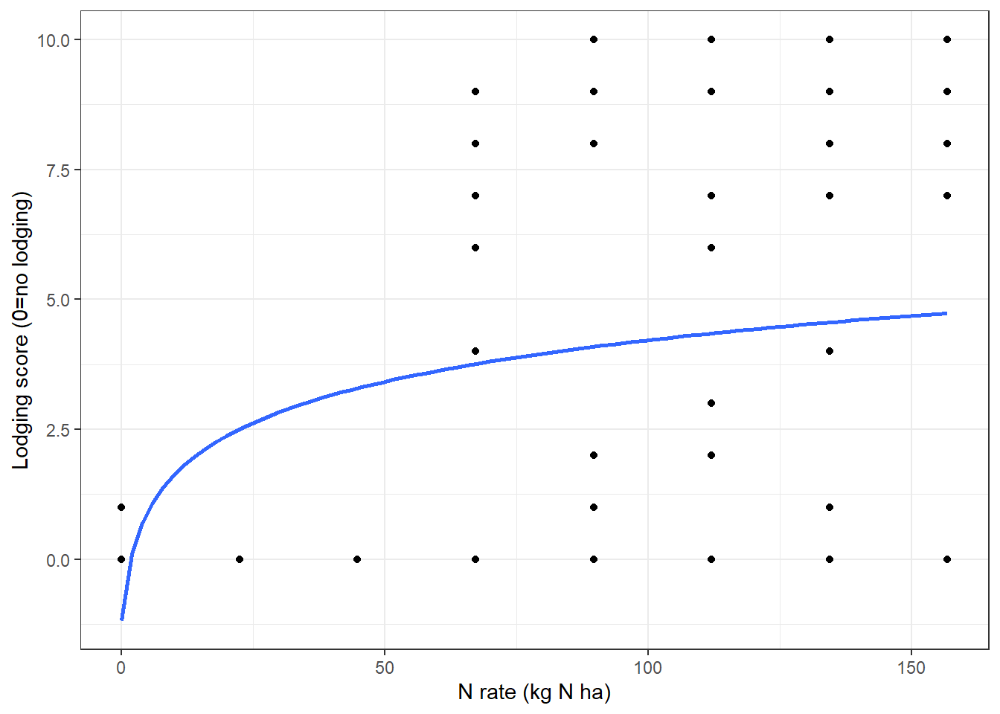
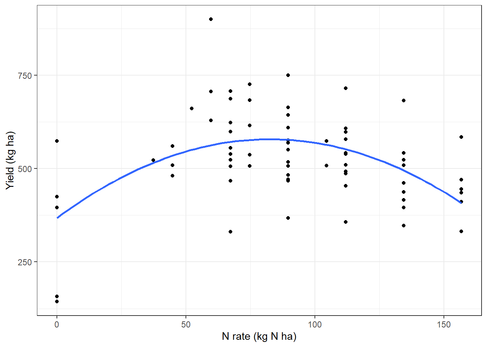
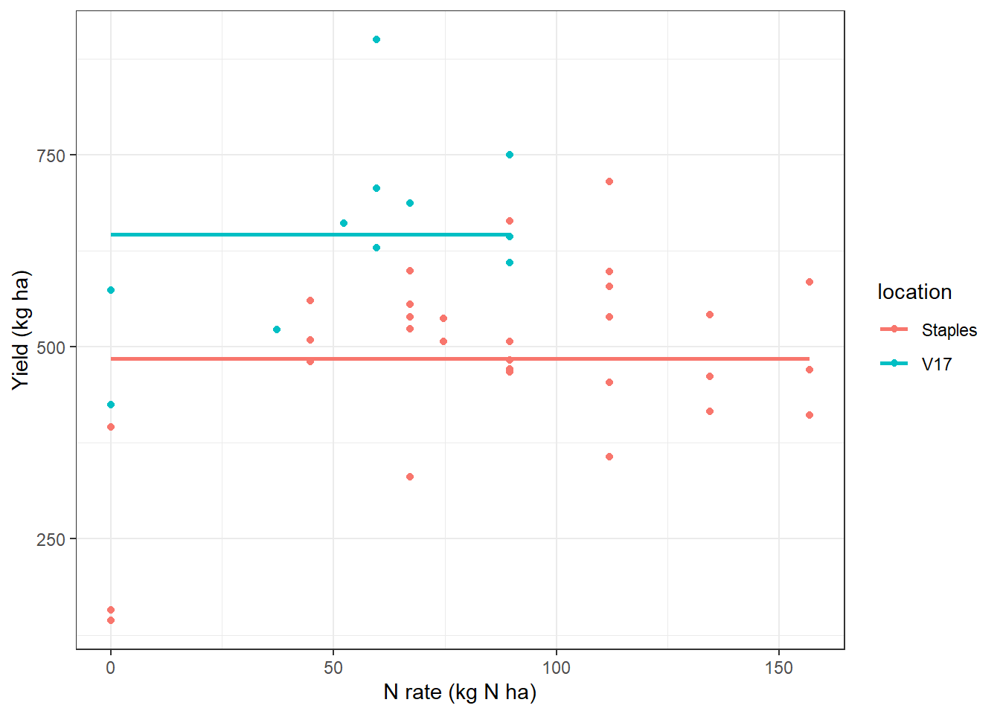

N-rate Timing
first draft
Key points
We applied N at different rates and timings to IWG stands over 10 site-years
We observed serious lodging in only 1 site-year, and observed lower lodging when N was applied at lower rates and further away from harvest (i.e. fall vs. spring or summer). Lodging was negatively correlated with plant height (\(r=-0.5\))
For both cumulative and yearly yield response to nitrogen rate, a quadratic relationship fit the data best, suggesting there is an optimal N rate.
Combined across all site-years, yields were higher when N was applied in the fall versus in the spring or when split with a summer application.
Of sites where we tracked yield over three years, we failed to reject the Ho that N rate and timing had no impact on the yield of the stand.
The relationship between N rate and timing is complex to measure in field experiments. Site conditions can greatly change the amount of N that becomes available to the plant, especially when applied as urea on the soil surface. More research is required to capture the variability of yield response to N rate and timing.
The optimal fertility program is likely site specific.
Data
Methods
Our dataset is unbalanced because design was not consistent across sites. First we try to see a consistent response across site-years, then we may analyze each site seperately.
| location | year | n |
|---|---|---|
| NDSU | 2020 | 16 |
| NDSU | 2021 | 16 |
| R100 | 2018 | 54 |
| R100 | 2019 | 54 |
| Staples | 2018 | 54 |
| Staples | 2019 | 54 |
| Staples | 2020 | 54 |
| V17 | 2019 | 16 |
| V17 | 2020 | 16 |
| V17 | 2021 | 16 |
Lodging
Understanding lodging is not a primary objective of this experiment, this data was only collected as a covariate if there happened to be a lot of lodging.
In general, if lodging is above 6, the yield data is questionable.
Only R100 and V17 showed lodging, and only R100 had severe lodging to the point where the yield data probably is not very accurate.
R100
R100 only had N applied in the second and third year.
Lodging only occurred in the stands third year of production.

We observe a general increase in lodging as nitrogen rate increases. We fit a logistic curve since lodging cannot be greater than 10 and we expect as we increase N rate more lodging will get closer to 10. This curve is obviously not perfect.

Here we are fitting a logistic regression with a y intercept of zero because we assume at 0N there is no lodging (as shown with control plots) and that lodging score will increase as nitrogen rate increases but that lodging will never exceed 10. The takeaway from this figure is that there is no lodging at 0N and that you see less lodging when you apply in fall and more when you apply in spring and summer.
Analysis
Analysis of Variance Table
Response: lodging
Df Sum Sq Mean Sq F value Pr(>F)
log(n.total + 1) 1 3109.08 3109.08 428.8900 <2e-16 ***
timing 5 19.87 3.97 0.5481 0.7388
log(n.total + 1):timing 3 18.84 6.28 0.8664 0.4655
Residuals 45 326.21 7.25
---
Signif. codes: 0 '***' 0.001 '**' 0.01 '*' 0.05 '.' 0.1 ' ' 1We reject Ho that the rate of nitrogen does not impact lodging.
We fail to reject Ho that timing has an impact on lodging.
Plant height
Plant height is also not a measurement of primary interest.
To what extent does plant height relate to lodging in R100?
R100 year 3

We observe an overall trend of decreasing plant height as N rate increases, modeled best quadratically.
Analysis of Variance Table
Response: height
Df Sum Sq Mean Sq F value Pr(>F)
poly(n.total, 2) 2 0.050934 0.0254669 5.4217 0.007609 **
timing 4 0.035753 0.0089383 1.9029 0.125627
Residuals 47 0.220770 0.0046972
---
Signif. codes: 0 '***' 0.001 '**' 0.01 '*' 0.05 '.' 0.1 ' ' 1We reject Ho that nrate does not impact height
We fail to reject Ho that timing has no effect on plant height
We have learned from R100 in it’s third stand age that as nrate increases, there is an increase in lodging and a decrease in plant height. To what extent are they correlated?
lodging height
lodging 1.0000000 -0.4993655
height -0.4993655 1.0000000We observe a pearson correlation coefficient of -0.5 between height and lodging. This is considered between a moderate and strong correlation.
Yield
cumulative
Cumulative yield of kernza stands after 3 years of N fertilizer. We are subsetting dataset, Only V17 and Staples meet this criteria (6 site years). We sum across stand.age to create a cumulative yield and a cumulative amount of N applied, then divide both values by 3 to get a yearly yield~N response.
quadratic linear model, yield response to N
[1] 1020.782[1] 1000.713Analysis of Variance Table
Response: yield.cum
Df Sum Sq Mean Sq F value Pr(>F)
poly(cumn, 2) 2 2696949 1348475 12.438 2.607e-05 ***
Residuals 66 7155387 108415
---
Signif. codes: 0 '***' 0.001 '**' 0.01 '*' 0.05 '.' 0.1 ' ' 1
We reject the Ho that N rate does not impact yield
Quadratic model provides the best fit
Analysis of Variance Table
Response: yield.cum
Df Sum Sq Mean Sq F value Pr(>F)
poly(cumn, 2) 2 2011131 1005565 12.0239 0.0001701 ***
location 1 2181936 2181936 26.0901 2.065e-05 ***
timing 2 284394 142197 1.7003 0.2009473
poly(cumn, 2):location 2 114253 57126 0.6831 0.5132778
poly(cumn, 2):timing 3 186149 62050 0.7419 0.5360498
location:timing 2 71804 35902 0.4293 0.6551831
Residuals 28 2341662 83631
---
Signif. codes: 0 '***' 0.001 '**' 0.01 '*' 0.05 '.' 0.1 ' ' 1We fail to reject the Ho that timing does not impact yield
quadratic linear mixed effect model
Here we have our fixed effect of cumulative N, timing and a random effect of block. Since we only have two sites, location is treated as a fixed effect.
Analysis of Deviance Table (Type II Wald chisquare tests)
Response: yield.cum
Chisq Df Pr(>Chisq)
poly(cumn, 2) 0.5868 2 0.7457
timing 4.0312 2 0.1332
location 27.2054 1 1.829e-07 ***
poly(cumn, 2):timing 2.8742 3 0.4114
poly(cumn, 2):location 1.1353 2 0.5669
timing:location 0.8907 2 0.6406
poly(cumn, 2):timing:location 0
---
Signif. codes: 0 '***' 0.001 '**' 0.01 '*' 0.05 '.' 0.1 ' ' 1We fail to reject Ho that yield does not differ N rate or timing

TAKEAWAY: We applied N at differing rates and timings over 3 years at two locations. We cannot reject the Ho that the amount of N and the timing of N do not impact the cumulative yield over the 3 years when modelled as a fixed effect model. Personally, I would say our data suggests at around 60 kg N ha per year results in best grain yields and then adding more N has no effect. When modeled as a simple quadratic linear model, we can make this conclusion, but when modelled as a mixed effect model we cannot.
Yearly performance
We are using all site years except third stand age of R100 due to high lodging.
How does N timing and N amount correlate with yield in a given year?
full model, site-years as random
We reject Ho that stand.age, timing and nitrogen rate do not impact yield
Here we have subsetted data so we have removed instances where a timing was Fall but no fall N was applied. We only start doing this here because this is the first time we are looking at timing across years at each year.
nitrogen rate on yield

We previously learned the relationship between N rate and yield is best modelled quadratically and then we rejected Ho that nitrogen rate does not impact yield. Here we are visualizing the subsetted data used in the model.
timing on yield
| timing | emmean | CI | n |
|---|---|---|---|
| Fall | 610 a | 246-975 | 32 |
| Control | 570 ab | 229-912 | 32 |
| Fall-Spring Split | 507 ab | 156-858 | 12 |
| Fall-Summer Split | 505 b | 141-870 | 48 |
| Spring | 456 b | 83-828 | 96 |
| Spring-Summer Split | 420 b | 54-785 | 48 |
We reject the Ho that yields were the same regardless of timing. Applying in the fall was estimated to have a higher grain yield than when split in the spring, summer or applied alone in the spring.
Since the dataset is unbalanced, we reported estimated marginal means, 95% confidence intervals and the number of data points within each timing used in the model.
full model, location as fixed effect
We have 4 locations and there is a rationale to model them as fixed effects. This puts a lot of stress on our model by cutting it up by n rate, timing, stand age and location. We end up making a lot of meaningless comparisons and need to reduce the comparisons we make in order to prevent a rank deficient model.
We ran a full factorial model, then would remove interaction terms that were insignificant and rerun the model.
we removed R100 from the dataset (site years = 8) because it only had one stand age after we removed third stand age for lodging and when stand.age is modelled as a fixed effect the R100 data doesn’t provide any utility to testing those hypotheses
Analysis of Deviance Table (Type II Wald chisquare tests)
Response: yield
Chisq Df Pr(>Chisq)
poly(n.total, 2) 10.7538 2 0.004622 **
timing 36.3076 5 8.243e-07 ***
stand.age 425.5273 2 < 2.2e-16 ***
location 156.3313 2 < 2.2e-16 ***
poly(n.total, 2):timing 4.0963 7 0.768623
poly(n.total, 2):stand.age 7.5965 4 0.107527
timing:stand.age 14.8525 8 0.062079 .
poly(n.total, 2):location 2.2606 3 0.520119
timing:location 2.4905 2 0.287867
stand.age:location 39.9292 3 1.103e-08 ***
poly(n.total, 2):timing:stand.age 2.1166 10 0.995366
poly(n.total, 2):timing:location 0
poly(n.total, 2):stand.age:location 2.0729 4 0.722358
timing:stand.age:location 0.3926 2 0.821752
poly(n.total, 2):timing:stand.age:location 0
---
Signif. codes: 0 '***' 0.001 '**' 0.01 '*' 0.05 '.' 0.1 ' ' 1Analysis of Deviance Table (Type II Wald chisquare tests)
Response: yield
Chisq Df Pr(>Chisq)
poly(n.total, 2) 17.991 2 0.000124 ***
timing 32.370 5 5.018e-06 ***
stand.age 390.718 2 < 2.2e-16 ***
location 163.091 2 < 2.2e-16 ***
stand.age:location 76.858 3 < 2.2e-16 ***
---
Signif. codes: 0 '***' 0.001 '**' 0.01 '*' 0.05 '.' 0.1 ' ' 1Change in yield over stand.age was different, Staples when down in year 2 and V17 went up. We will need to separate by location or stand age.
slice by stand age
Slicing by second stand age yielded the only interesting results.
Analysis of Deviance Table (Type II Wald chisquare tests)
Response: yield
Chisq Df Pr(>Chisq)
poly(n.total, 2) 14.3748 2 0.000756 ***
timing 30.0587 5 1.436e-05 ***
location 118.6736 2 < 2.2e-16 ***
poly(n.total, 2):timing 4.1718 6 0.653435
poly(n.total, 2):location 2.9520 3 0.399092
timing:location 0.5350 2 0.765288
poly(n.total, 2):timing:location 0
---
Signif. codes: 0 '***' 0.001 '**' 0.01 '*' 0.05 '.' 0.1 ' ' 1| timing | emmean | CI | n |
|---|---|---|---|
| Fall | 768 a | 677-860 | 16 |
| Fall-Summer Split | 722 ab | 615-829 | 12 |
| Fall-Spring Split | 670 abc | 518-821 | 4 |
| Control | 638 abc | 346-929 | 11 |
| Spring | 585 bc | 503-667 | 31 |
| Spring-Summer Split | 520 c | 413-627 | 12 |
TAKEAWAY: across 8 site-years, second year yields were higher when N was applied in the fall versus in the spring or a spring summer split. They were also higher in the Fall summer split compared with the spring summer split
slice by site
Lastly, we can slice by site and do an independent analysis for each site. This is what Dominic did and makes a lot of sense.